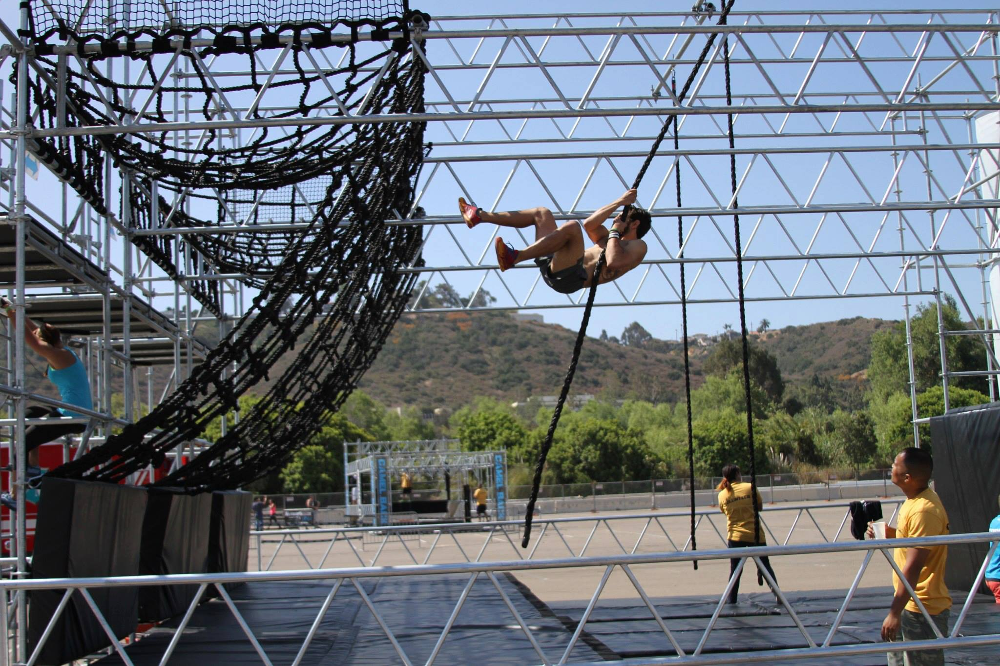
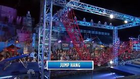

Alle Obstacles
Seizoen 1
Seisoen 2
Seisoen 3
Alle Obstacles
Seizoenen
Seizoen 1
Seisoen 2
Seisoen 3
Alle Ninja Warrior Obstacles

Rope Swing
Bekijk deze oefening
Pipe Slider
Bekijk deze oefening
Warped Wall
Bekijk deze oefening
Tarzan Rope
Bekijk deze oefening
Jumping bars
Bekijk deze oefening
Cargoclimb
Bekijk deze oefening
Quad Steps
Bekijk deze oefening
Bridge of Blades
Bekijk deze oefening
Jumping Spider
Bekijk deze oefening
Salmon Ladder
Bekijk deze oefening
Circle Slider
Bekijk deze oefening
Log Grip
Bekijk deze oefening

Jump Hang
Bekijk deze oefening
Unstable Bridge
Bekijk deze oefening